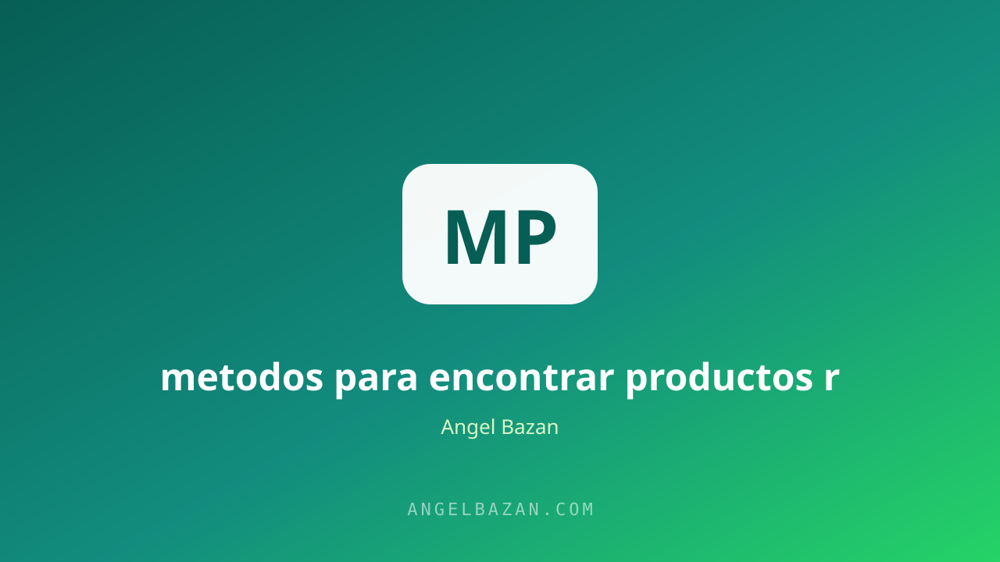

Métodos para encontrar productos digitales rentables antes de lanzar
Lanzar un producto que nadie quiere es el error más caro del marketing digital. Estos métodos te dicen qué vender antes de invertir tiempo, dinero o reputación.
En este artículo
El error más caro del marketing digital no es gastar de más en anuncios: es lanzar un producto que nadie quiere. Pasas semanas creando contenido, inviertes en tráfico y descubres que el mercado no estaba interesado. La validación existe justamente para evitar ese escenario: antes de producir en serio, compruebas si hay demanda real y si la gente pagaría por tu solución. Es el paso que separa a los que apuestan de los que construyen sobre datos.
Estos métodos no son teoría de manual: son los que uso antes de lanzar cualquier oferta. No buscan la idea perfecta, buscan evidencia. Si después de aplicar dos o tres métodos tienes señales claras, lanzas con confianza. Si no las tienes, ajustas o cambias de rumbo. El costo de validar es mínimo comparado con el de lanzar a ciegas y quemar presupuesto en un producto sin mercado.

Por qué validar antes de crear
La validación separa el deseo de la evidencia. Antes de crear, necesitas respuestas a cuatro preguntas: ¿este problema existe?, ¿es lo bastante doloroso como para que la gente pague por resolverlo?, ¿mi solución es creíble? y ¿cuánto estarían dispuestos a pagar? Sin esas respuestas, todo lo demás es una apuesta. Incluso el mecanismo único de tu oferta solo importa si antes confirmaste que existe un mercado que quiere lo que vendes.
Busca demanda, no ideas
Las ideas sobran; la demanda escasea. En lugar de preguntarte qué inventar, observa dónde ya hay gente pagando: cursos que se venden bien, comunidades activas, productos con reseñas reales. Un producto ganador casi siempre resuelve un problema que ya se habla en TikTok, en foros o en grupos de WhatsApp. El que busca demanda en vez de ideas descubre lo que el mercado ya validó por él, y reduce el riesgo a la mitad.
Espía a la competencia
La competencia no es un enemigo: es tu mejor estudio de mercado. Si alguien ya vende algo parecido, hay demanda y el modelo funciona. Analiza su página de ventas, sus anuncios en la Biblioteca de Anuncios de Meta y sobre todo los comentarios: ahí están las objeciones y los deseos exactos de tus futuros clientes. La herramienta de análisis de copy de competencia te ayuda a extraer esas lecciones en minutos y a evitar los errores que ellos ya cometieron.
Pregunta a tu audiencia
Tu audiencia ya te dice qué quiere: solo tienes que preguntar. Encuestas, historias con preguntas y DMs directos funcionan: "¿cuál es tu mayor frustración con X?", "¿qué te detiene para lograr Y?". Las respuestas en bruto valen oro porque contienen las palabras exactas que usará tu copy. Si todavía no tienes audiencia, ese es el primer trabajo: los métodos para encontrar clientes por internet empiezan igual, con conversaciones. No necesitas miles de seguidores, necesitas cincuenta personas que confíen en ti.
Lanza un producto mínimo
La prueba definitiva es que alguien ponga dinero. No hace falta el producto completo: una versión mínima, con lo esencial, vendida a un grupo pequeño y honesto, es suficiente. Si pagaron y lo terminaron, validaste. Si pagaron y no lo terminaron, descubriste un problema de entrega antes de escalar. Y si no pagó nadie, aprendiste la lección al precio más barato posible. La validación termina donde empieza la venta: con la oferta irresistible y un embudo de ventas que convierta el interés en ingresos.
Señales de producto ganador
- La gente ya paga por resolverlo en algún formato, aunque sea imperfecto.
- La solución se explica en una frase sin tecnicismos.
- El mercado habla del problema en redes de forma recurrente.
- Puedes prometer un resultado medible y demostrable.
Cuando juntas varias de estas señales, el siguiente paso no es producir más: es crear contenido que venda y validar la oferta con tráfico controlado. El presupuesto de testeo de Meta Ads te ayuda a confirmar la demanda con datos antes de comprometerte en serio.
Preguntas frecuentes
¿Cuánto tiempo toma validar un producto? Con método, entre una y tres semanas: encuestas, entrevistas y una venta mínima a un grupo pequeño. Más tiempo indica que la idea no está madura o que el mercado no la pide.
¿Puedo validar sin tener audiencia? Sí: usa grupos y comunidades donde tu cliente ideal ya está, responde dudas con valor y ofrece la versión mínima a quien muestre interés. La audiencia se construye durante la validación.
¿Qué hago si ninguna idea valida? Cambia el problema, no el esfuerzo. Vuelve a la etapa de demanda, revisa lo que la competencia vende y pregúntale al mercado otra vez. Validar es iterar, no rendirse.

Angel Bazán
Especialista en funnels, Meta Ads y WhatsApp + IA. Ayudo a negocios a vender más combinando tráfico pagado con conversaciones automatizadas.
Conoce más sobre mí →Aprende a crear y vender productos digitales con Meta Ads, WhatsApp e IA
Clases en vivo, estrategias y recursos para construir tu sistema desde cero. 🚀
Únete gratis al grupo